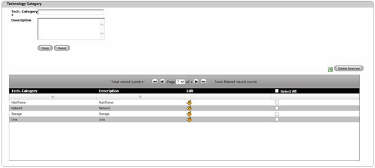
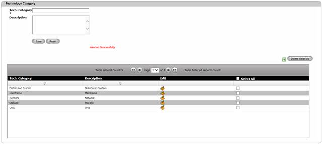

Create Technology Category
To create a Technology Category,
1. Navigate Masters>>Technology Category on the DCTrackMobileWeb menu bar.
You will see the Technology Category screen.

Figure 53: Technology Category screen
2. Enter information on the required field.
3.
Click Save  button to complete the creation process or else
click Reset
button to complete the creation process or else
click Reset  button to refresh the page fields.
button to refresh the page fields.
Once created, the Technology Category details will be displayed on the Table View and successful message is displayed.

Figure 54: Technology Category Screen – Successful Creation